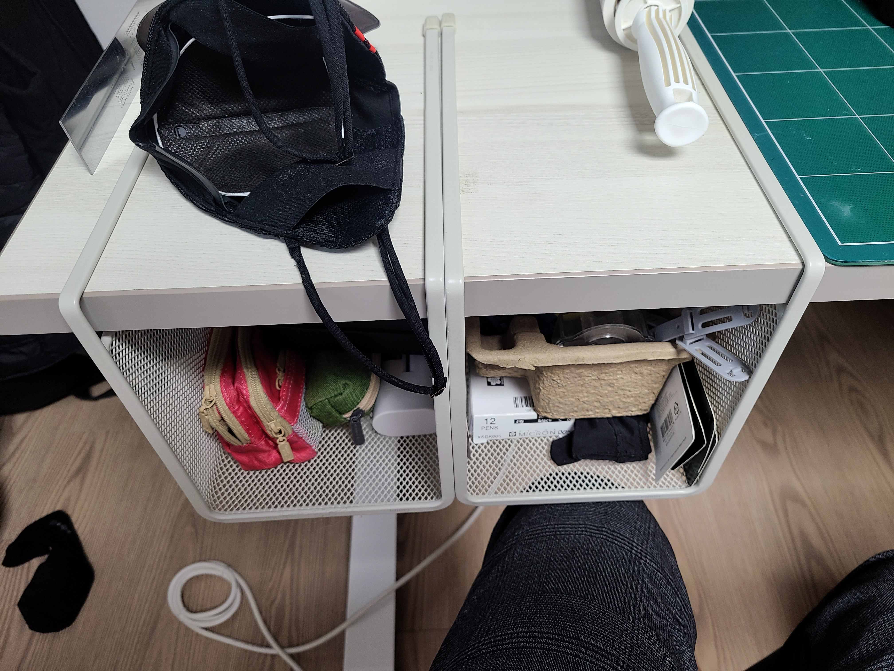

HTML로 웹페이지 만들기
제목은 h1, h2, h3.. 숫자는 각각 대제목, 중제목 소제목 등 제목 서열이다.
중제목은 이렇고
소제목은 이렇다. strong은 강조의 굵은글씨, u는 언더라인
br은 엔터. 닫는 태그가 없다. \n과 같다고보면될듯.
< 단락을 표현할 때는, 줄바꿈 br이 아닌 p 태그를 쓴다. p 태그는 열고 닫음이 있다.
아마 단락으로 하면, 그 자체가 정보가 되는듯.
하지만 br이 줄간격 조절하기도 좋고해서 많이 쓴다고 함. 자유로우니깐 ㅎㅎ
. 하지만 웹에는 css라는 기술이 있음. css를 쓰면 p의 한계를 극복할수가 있는데
. css는 html과는 다른 문법을 가진 언어. html이 정보를 표현한다면, css는 정보를 꾸며준다. cs
css를 쓰는건 예를들면 다음 단락과 같다.
이렇게 하면, 태그의 위쪽에 200px만큼의 여백이 생긴다고 한다.
이렇게하면 p를 쓰면서 줄간격 조절이 되겠군.
HTML의 중요성
검색엔진에의 노출
h1을 태그해서 제목을 쓸 수도 있고 단순히
strong, u, css등을 활용해서 제목처럼 보이게 작성할 수도이쓴데
h1태그에 쓰인 글이 구글에서 훨씬 먼저 노출된다.
이미지 삽입
이미지를 삽입하려면, 태그만으로는 정보가 부족한데, 여기서 추가되는 속성이
"속성"(attribute)이다. img 태그에 source의 약자인 src를 추가할건데 다음과 같다.

내 PC에 있는 img를 삽입하려면,

부모/자식 태그란 무엇인가? 예를 들어 태그 안에 태그가 있는 관계를
부모자식이라 하는데 a 이게뭘까
근데 참고로 a가 꼭 p안에만 있는건 아님.
뜬금없지만 목차를 만들어보자. 목차는 li 태그(list)
ul태그는 Unordered List.
- html
- CSS
- javascript
ol태그는 oredered list
- typescript
- python
- Solidity
타이틀과 메타
맨윗줄에 보면
:title>HTML로 웹페이지 만들기
:meta charset="utf-8">
이렇게 적혀있는데, 타이틀은 제목. 페이지열때 위에 바에 그제목으로 표시되고..
메타 charset은 utf-8형식으로 읽겠다는 소리. 우리가 이 메모장을 uft-8로작성했으니
읽을때고 그걸로 읽어야 안깨지겠지, 안그러면 한글꺠짐.
또 이 웹페이지가 html로 만들어졌다라는 뜻으로 쓴게 !doctype html
그리고 본문을 설명하는 정보를 담은걸 head태그에 집어넣고, 본문은 body태그에 집어넣기
링크는 이렇게 네이버로 바로가기
인터넷, html, 웹, 브라우저...
인터넷 : 컴퓨터 네트워크 망
웹 : 인터넷 상에서 동작하는 하나의 서비스이자 시스템(체계)
텍스트, 그림, 소리, 영상 등의 멀티미디어 정보를 하이퍼텍스트 구조로 연결.
웹의 하나의 페이지를 작성할때는 html 파일 형식의 텍스트로 작성하며,
웹을 검색하는 첫 소프트웨어가 월드 와이드 웹(www). 훗날 웹 자체의 이름이 됨. 이런 소프트웨어를 웹브라우저라고 하며, ie, 크롬, edge, 웨일 등.
원시웹 : 웹의 기본을 갖추며 아직 아무 정보도 올려지지 않은 상태.
당연한 얘기지만, 인터넷이 동작하려면 최소 컴퓨터가 2대는 있어야 함.
2대의 컴퓨터를 구매. 인터넷 연결 (물리적)
한 컴퓨터에는 웹서버, 하나에는 웹 브라우저 설치
웹서버가 설치된 컴퓨터에 info.cern.ch라는 주소
브라우저가 설치된 컴퓨터의 주소창에 "http://info.cern.ch/index.html"이라는 주소를 입력하고 엔터.

then, 웹브라우저가 설치된 컴퓨터가 이 텍스트를 보고 인터넷을 통해 전기적신호를 info.cern.ch라는 주소의 컴퓨터(서버)에 보냄(request)
그 신호에는 "index.html"이라고 적혀있음. index.html 파일의 코드를 원한다는 의미.
그럼 서버컴퓨터가 index.html을 브라우저컴퓨터에게 보냄.(response)
인터넷을 통해 코드를 받은 브라우저컴퓨터에서 브라우저는 그 코드를 읽어서 웹페이지를 화면에 출력.
브라우저는 이 관계에서 Client라고 불림.
브라우저를 설치하려면, 크롬이나 인터넷익스플로러같은걸 설치하면되는데... 서버가 되려면?
똑같음. "서버" 프로그램을 설치하면 됨. 내가 만든 폴더를 공유해서 인터넷을 통해 리퀘스트에 리스폰스하면 됨!.
하지만 서버운영은 쉽지않음.(맨날켜놔야하고, 프로그램을 배워서 설치해야함. 또 인터넷을 통해 외부전송할 수 있도록 설정해야함)
웹서버를 제공해주는 업체를 이용하는데 이를 웹 호스팅 업체 라고 함.
대표적인 웹호스팅 업체가 github인데 여기의 "pages" 기능.